<mat-toolbar color="primary" class="toolbar" [style.background]="selectedColor" [style.font-family]="selectedFont || 'Roboto'">
  <mat-toolbar-row>
    <span [style.font-family]="selectedFont || 'Roboto'"> Material CDK</span>
    <span class="spacer"></span>
    <button mat-button [routerLink]="['']" class="navigation-opt" [style.font-family]="selectedFont || 'Roboto'"><mat-icon>home</mat-icon> Home</button>
    <button mat-button [routerLink]="['talks']" class="navigation-opt" [style.font-family]="selectedFont || 'Roboto'"><mat-icon>mic</mat-icon> Talks</button>
    <button mat-button 
      (click)="isOpen = !isOpen" 
      cdkOverlayOrigin 
      #trigger="cdkOverlayOrigin"><mat-icon class="mat-icon material-icons" role="img" aria-hidden="true">format_color_fill</mat-icon></button>
    <button mat-button 
      cdkOverlayOrigin 
      #triggerFont="cdkOverlayOrigin" 
      (click)="isOpenFont=!isOpenFont">Font</button>
    </mat-toolbar-row>
</mat-toolbar>

<ng-template 
  cdkConnectedOverlay
  [cdkConnectedOverlayOrigin]="trigger"
  [cdkConnectedOverlayOpen]="isOpen">
  <div class="color-picker"
      role="dialog" aria-label="Color picker">
    <div class="selector-color-container" role="listbox" tabindex="0" aria-label="Select a color" cdkTrapFocus cdkTrapFocusAutoCapture>
      <div *ngFor="let color of colors; index as i"
          role="option"
          [style.background]="color.hex"
          [attr.aria-label]="color.name"
          [attr.aria-selected]="color.hex == selectedColor"
          (click)="selectedColor = color.hex; isOpen = false"></div>
    </div>
  </div>
</ng-template>

<ng-template cdkConnectedOverlay
[cdkConnectedOverlayOrigin]="triggerFont"
[cdkConnectedOverlayOpen]="isOpenFont"
>
  <div class="font-picker">
    <div class="listfont" (click)="selectedFont = item.name; isOpenFont=false"  *ngFor="let item of fonts" >
      {{item.name}}
    </div>
  </div>
</ng-template>

